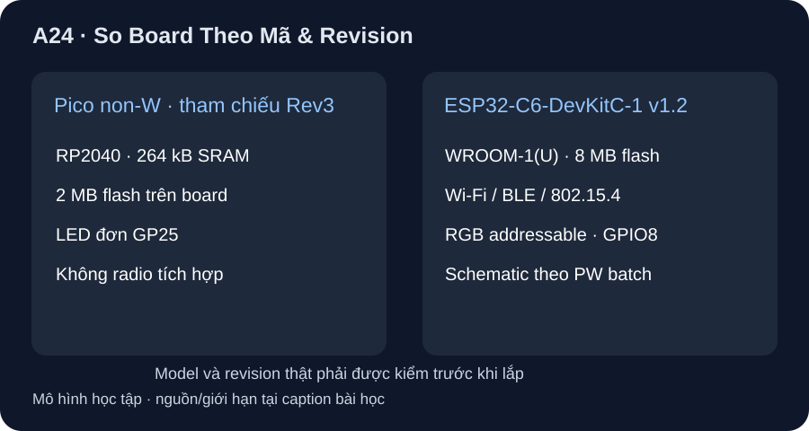

So Board Theo Mã & Revision
Pico non-W và ESP32-C6-DevKitC-1 v1.2 giải những yêu cầu khác nhau; pinout và schematic cần đúng PCB/batch.
- So hai board bằng đúng model/revision, phân biệt thông số chip/module với những gì board đưa ra.
- Chọn ứng viên cho bài LED offline hoặc logger không dây bằng yêu cầu và nguồn hãng.
- Nêu ít nhất ba thứ phải xác minh trên PCB/batch trước khi nối cảm biến và đánh giá nguồn/ADC.

Đọc hình bằng chữ
Bên trái là Pico đời đầu không W: chip RP2040, flash 2 MB trên board, LED đơn do GP25 điều khiển và không có radio tích hợp. Bên phải là ESP32-C6-DevKitC-1 v1.2: module WROOM-1 hoặc WROOM-1U với flash 8 MB, radio Wi-Fi/BLE/802.15.4 và RGB LED addressable gắn GPIO8. Các thông tin này không tạo pinout thay thế cho nhau.
1. So ở cùng cấp board
Raspberry Pi Pico đời đầu không W dùng RP2040: hai Cortex-M0+, 264 kB SRAM chip, 2 MB flash board, 26 GPIO đa chức năng ở board; LED tích hợp trên GP25. Datasheet Pico Fig. 1 dùng ảnh Rev3, nhưng dự án chưa có board thực để kiểm marking. Espressif ESP32-C6-DevKitC-1 v1.2 có module WROOM-1 hoặc WROOM-1U, flash 8 MB trong module, Wi-Fi 6 2,4 GHz/Bluetooth LE/IEEE 802.15.4 và RGB LED addressable qua GPIO8. ESP32-C6 datasheet v1.5 ghi HP CPU RISC-V tối đa 160 MHz và LP CPU riêng; không lấy tần số tối đa làm tốc độ ứng dụng đã đo.
| Tiêu chí | Pico đời đầu non-W, hình Rev3 | ESP32-C6-DevKitC-1 v1.2 |
|---|---|---|
| Chip/module | RP2040 trên board | ESP32-C6-WROOM-1(U), module trong DevKitC |
| CPU | Hai Cortex-M0+ | HP RISC-V tối đa 160 MHz; LP CPU riêng |
| Nhớ dùng làm ví dụ | 264 kB SRAM chip, 2 MB flash board | 8 MB SPI flash trong module; không suy heap từ con số này |
| Radio tích hợp | Không (bản non-W) | Wi-Fi 6/BLE/802.15.4 |
| LED trên board | LED đơn GP25 | RGB addressable do GPIO8 điều khiển |
| Cần kiểm khi nhận board | PCB/biến thể Pico vs W/H/2 | v1.2, WROOM-1 hay -1U, PW batch/schematic v1.2/1.3/1.4 |
2. Chọn theo yêu cầu thay vì số lớn nhất
Nếu mục tiêu là lab GPIO LED offline không dây ngoài, Pico non-W cho đường học ngắn: mã A23 nhắm đúng GP25. Nếu bài toán cần radio Wi-Fi/BLE/802.15.4, DevKitC v1.2 là ứng viên vì tài liệu board xác nhận radio. Nhưng không chuyển Pin(25) của Pico sang DevKitC: GPIO8 điều khiển một RGB LED addressable, giao thức và firmware khác; GPIO8 còn là strapping pin theo footnote bảng J1, nên mọi mạch ngoài trên chân đó cần đọc chế độ boot. Không dùng số “26 GPIO” của Pico để suy số GPIO lộ ở header DevKitC.
3. Revision của schematic quan trọng
Espressif user guide v1.2 ghi R29/R6 trong mạch LED được đổi ở lô sau PW-2023-07-0440 và R7 UART_RXD được đổi ở lô sau các mã PW năm 2024; tương ứng schematic v1.2/v1.3/v1.4. Một tên board v1.2 không đủ để chốt mọi điện trở trên PCB. Hướng chọn nguồn/GPIO/ADC của đồ án cần ảnh board, marking module, PW batch nếu có, schematic tương ứng và datasheet chip; chưa có nên không công bố dòng GPIO, sai số ADC hay ngân sách nguồn số cụ thể cho một bản board của học viên.
4. Hoạt động quyết định
Tạo hai hàng yêu cầu: (a) LED tích hợp offline, (b) logger cần truyền không dây. Điền board ứng viên và nguồn hãng cho từng quyết định. Với (b), ghi thêm ba mục cần xác minh trước khi lắp cảm biến: đúng PCB/PW batch-schematic, module/anten, và nguồn/I/O của cảm biến so với board. Nếu chỉ có tài liệu, đánh dấu “ứng viên”, không đánh dấu “đã chạy”.
Không có board Pico/DevKitC trong môi trường QA, chưa chạy ESP-IDF/MicroPython trên board, chưa đo nguồn, radio, ADC hay chân LED. Board v1.2 thuộc một họ có nhiều schematic revision theo batch; thiết kế dây nối phải dùng bản chính xác của mẫu thật.
Một logger cần gửi dữ liệu không dây và hiển thị trạng thái. Trong hai board của bảng, chọn ứng viên có nguồn hãng chứng minh radio. Liệt kê ít nhất ba thông tin revision/hardware phải kiểm trước khi nối một cảm biến analog. Có thể dùng nguyên lab Pin(25) của A23 để điều khiển RGB LED board này không?
- 1 điểm: ESP32-C6-DevKitC-1 v1.2 là ứng viên vì guide board nêu Wi-Fi/BLE/802.15.4; chưa là board đã duyệt cho toàn hệ.
- 1 điểm: kiểm đúng model v1.2, WROOM-1 hay -1U và marking/batch PW để lấy schematic v1.2/1.3/1.4 tương ứng.
- 1 điểm: kiểm header/pin ADC, dải điện áp nguồn/cảm biến và đặc tính ADC theo datasheet chip đúng revision/batch; không suy từ tên họ.
- 1 điểm: không dùng nguyên
Pin(25); DevKitC có RGB addressable ở GPIO8, đồng thời GPIO8 là strapping pin, cần firmware/giao thức/schematic riêng.